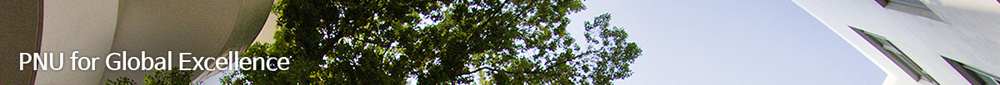
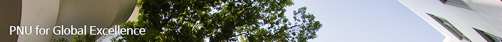

SUAE_Asia Summer School
캠퍼스아시아 여름디자인워크숍 프로그램 안내
 

Background of Summer School
Rapid urbanization and economic development in Asia have increased the demand for energy, deteriorated the urban and architectural environment, and problems such as air pollution that affect the environment globally. Asian cities are rich with diverse cultures and traditions with a long history. Therefore, developing human recourses with an understanding of the social and cultural background of the living environment, and a broad and practical knowledge of technologies has become vital for building sustainable urban and architectural environment of the Asia.
CAMPUS_Asia::SUAE_Asia Program is dual degree program between Architecture Department of Kyushu University, Tongji University and Pusan National University, aimed at enhancing the education of urban and architectural environment by developing knowledge and skill to achieve sustainable cities and buildings in Asia. Program, as a Korea UNESCO ESD(Education for Sustainable Development) Official Project assigned by Korean National Commission of UNESCO, currently focusing on present urban and architectural problems and enlarging education opportunity to promote the practice of resilient design, accessibility and inclusive urban design and development which are adequately addressed in the UNESCO events, outcomes and publications.
The world demanding greater cooperation rather than protectionism, acknowledgement of heterogeneity rather than homogeneity. Inclusive urbanism is adequately responsive to the direction of how the Asia is moving. On behalf of CAMPUS_Asia::SUAE_Asia Program, Summer School is soliciting students Case Studies that demonstrate inclusive and accessible Urban/Architectural Design and Development for inclusion on post-workshop tour and documentation weeks. Every proposals will be included in publication that they will be publishing this year and your contribution will be acknowledged too.
오늘의 세계는 보호주의보다는 상호 우호적인 협조를 요구하고 있으며, 동종성보다는 이질성에 대한 상호 이해를 필요한 환경이다. 이는 서구의 선진국들뿐 아니라 급진적으로 성장하고 있는 아시아 국가들에게 있어서도 적용되며 앞으로 포용적 도시주의를 지향하여야 할 시대임을 인식하게 한다. CAMPUS_Asia::SUAE_Asia의 여름워크숍은 부산시의 부산국제건축디자인워크솝과 함께 bundle로 진행되는 프로그램으로서 한중일 3개국의 대한들 뿐 아니라 세계의 다양한 파트너 대학에서 학생들이 참가하는 개방적인 환경을 지향하고 있으며 부산대학교의 여름 계절학기 교과목인 Field Research and Documentation_Cultural Resources of Urban Environment(I)의 수업으로 운영되고 있어 참여대학의 학생들에게도 학점이 주어지는 학점교환의 교류실적을 동반하고 있다. 세계와 아시아 국가들의 환경변화에 따라서 포용도시를 추구하는 지향성을 가지고 관련주제에 따라 매년 다양한 아이디어들이 제안되고 있으며 이들의 아이디어는 책으로 출간된다.
2017 Summer school Workshop
● Theme : Liminality and Communitas in Urban Public Space
● Program : The first Week(5th~11st Aug. 2017) : Domestic Tour, The second Week(13th~17st Aug. 2017) : Lecture and Documentation
● Reading - Turner and Liminality
2018 Summer school Workshop
● Theme : Liminality in Urban Space and Time
● The first Week(5th~10th Aug. 2018) : Domestic Tour, The second Week(11th~17th Aug. 2018) : Lecture and Documentation
● Reading - Understanding the liminality in Urban Space
2019 Summer school Workshop
● Theme : Seeking Case Studies in Inclusive Urban/Architectural Planning & Design
● Domestic Tour : first week(3th~9th Aug. 2019), Lecture and Documentation : second week(12th~16th Aug. 2019)
● Reading - Understanding the Inclusive Urbanism